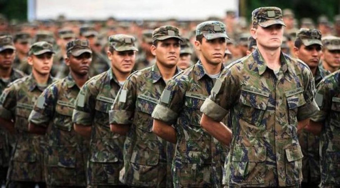
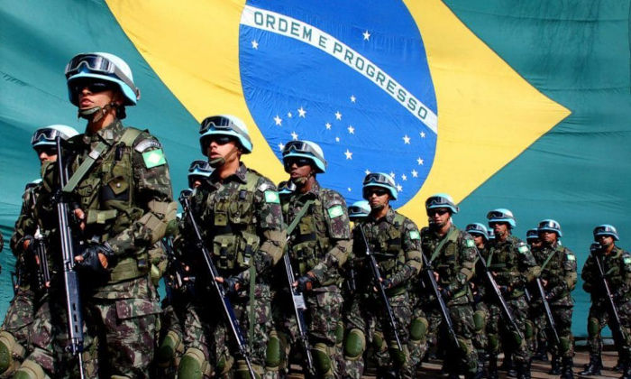

Sobre o alistamento militar
O que é o alistamento militar?
É quando o brasileiro convocado para o serviço militar inicial é obrigado a se inscrever para concorrer à seleção em um quartel da Marinha, Exército ou Aeronáutica
Como faço para me alistar?
Deve acessar o site do Alistamento Militar ou comparecer a uma Junta do serviço militar mais próxima da sua residencia.
Quando devo me alistar?
O jovem deverá se alistar nos primeiros 6 meses (janeiro a junho) até completar 18 anos de idade. O alistamento realizado nesse período será gratuito. Após esse prazo, o jovem continua com o dever de se alistar, contudo terminará em débito com o serviço militar até que pague a multa referente ao alistamento fora do período regulamentar.

Missão, Visão e Valores do Exército Brasileiro
Missão
- Contribuir para a garantia da soberania nacional, dos poderes constitucionais, da lei e da ordem, salvaguardando os interesses nacionais e cooperando com o desenvolvimento nacional e o bem-estar social.
- Para isso, preparar a Força Terrestre, mantendo-a em permanente estado de prontidão.
Visão
Ser um Exército capaz de se fazer presente, moderno, dotado de meios adequados e profissionais altamente preparados, composto por capacidades militares que superem os desafios do Século XXI e possam respaldar as decisões soberanas do Brasil.
Valores
- Patriotismo – amar à Pátria – História, Símbolos, Tradições e Nação – sublimando a determinação de defender seus interesses vitais com o sacrifício da própria vida.
- Dever – cumprir a legislação e a regulamentação a que estiver submetido, com autoridade, determinação, dignidade e dedicação, assumindo a responsabilidade pelas decisões que tomar.
- Lealdade – cultuar a verdade, sinceridade e sadia camaradagem, mantendo-se fiel aos compromissos assumidos.
- Coragem – ter a capacidade de decidir e a iniciativa de implementar a decisão, mesmo com o risco de vida ou de interesses pessoais, no intuito de cumprir o dever, assumindo a responsabilidade por sua atitude.
